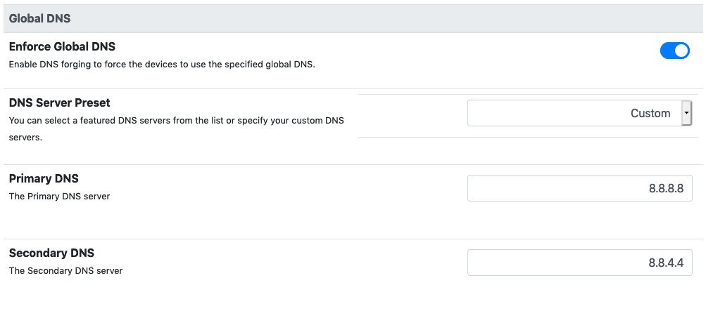
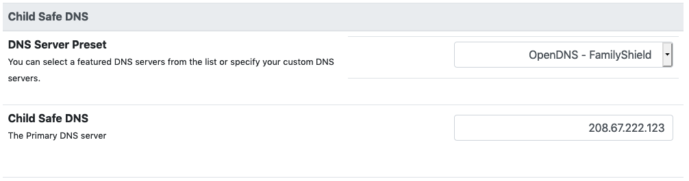

DNS
nEdge can enforce specific DNS servers to be used by LAN devices and provides some presets with secure DNS servers, which provide an additional security against malware sites.
Global DNS
The DNS servers configured in the Global DNS section of the DNS Configuration tab are used in the following cases:
When the DHCP server is enabled (routing mode), clients (which are non child-safe) are configured to use those DNS servers
By the nEdge device for interfaces configured in static address mode
If the Enforce Global DNS option is enabled, nEdge will enforce the use of the specified DNS servers even if the clients configure their DNS servers manually.
The presets provide a list of Secure DNS servers that can be chosen, otherwise it is possible to specify ‘Custom’ DNS servers manually.

Global DNS configuration
Child Safe
The Child Safe DNS is the DNS used for users which are marked with the Child Safe option.

Child DNS configuration
Such DNS can protect the children from inappropriate adult content.
Note: nEdge will always enforce the use of such a DNS for all the child safe users, even if they manually change their DNS servers.
DNS issue: 5 seconds delay
Due to a bug into the kernel, there is an issue with the DNS resolver of some versions of glibc, which causes a client program to stuck for about 5 seconds when performing A and AAAA DNS requests using the same socket. This can be verified with the following command:
conntrack -S
When the issue occurs, the command above will increase the insert_failed counter. A temporary solution to the issue is to force glibc to use a different socket for the AAAA request. On a Linux client, this can be done by adding the following line to /etc/resolv.conf:
options single-request-reopen